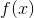

PyTorch深度学习
深度学习构建模块: Affine maps, non-linearities and objectives
深度学习以巧妙的方式将non-linearities和linearities组合在一起.non-linearities的引入允许强大的模型. 在本节中, 我们将使用这些核心组件, 构建一个objective函数, 并且看看模型是如何训练的.
Affine Maps
深度学习的核心工作之一是affine map, 这是一个函数  其中
对于矩阵  和向量 . 这里学习的参数是 and
和向量 . 这里学习的参数是 and  . 通常, 被称为 偏差 项.
. 通常, 被称为 偏差 项.
Pytorch和大多数其他深度学习框架与传统的线性代数有所不同.它映射输入的是行而不是列. 也就是说, 下面的输出的第 行是 的输入的第 行加上偏置项的映射. 看下面的例子.
# 作者: Robert Guthrie
import torch
import torch.autograd as autograd
import torch.nn as nn
import torch.nn.functional as F
import torch.optim as optim
torch.manual_seed(1)
lin = nn.Linear(5, 3) # 从 R^5 映射到 R^3, 参数 A, b
# 数据是 2x5\. A 是从 5 映射到 3... 我们能在A下映射得到想要的数据吗?
data = autograd.Variable(torch.randn(2, 5))
print(lin(data)) # 是的
Non-Linearities(非线性)
首先, 注意以下将解释为什么我们首先需要 non-linearities.假设我们有两个 affine maps and . 什么是 ?
是一个矩阵, 是一个向量, 所以我们看到组合两个affine maps会得到一个affine map
由此可以看出, 如果你想让你的神经网络成为affine 组合的长链条, 那么相比于做一个简单的affine map, 此举不会给你的模型增加新的作用.
如果我们在affine层之间引入non-linearities, 则不再是这种情况, 我们可以构建更强大的模型.
接下来有一些重要的non-linearities. 是最常见的. 你可能想知道: “为什么这些函数？我可以想到很多其他的non-linearities 函数.” 其原因是他们的梯度容易计算, 并且计算梯度对学习是必不可少的. 例如
一个简单的提示: 虽然你可能已经在入门AI中学习到了一些神经网络, 其中 是默认的non-linearity, 但通常人们在实践中会避免它. 这是因为随着参数绝对值的增长, 梯度会很快 消失 . 小梯度意味着很难学习. 大多数人默认tanh或ReLU.
# 在pytorch中, 很多的non-linearities是在torch中.是功能性的 (我们将它记为 F)
# 这意味着 non-linearites 不像 affine maps 一样拥有参数.也意味着它们再训练时没有可以更新的参数.
#
data = autograd.Variable(torch.randn(2, 2))
print(data)
print(F.relu(data))
Softmax and Probabilities(Softmax和概率分布)
函数 也是一个 non-linearity, 但它的特殊之处在于它通常是网络中一次操作. 这是因为它接受了一个实数向量并返回一个概率分布.其定义如下. 定义  是一个实数的向量(正数或负数都无所谓, 没有限制). 然后, 第i个 的组成是
是一个实数的向量(正数或负数都无所谓, 没有限制). 然后, 第i个 的组成是
应该清楚的是, 输出是一个概率分布: 每个元素都是非负的, 并且所有元素的总和都是1.
你也可以把它看作只是将一个元素明确的指数运算符应用于输入, 以使所有内容都为非负值, 然后除以归一化常数.
# Softmax也在 torch.nn.functional
data = autograd.Variable(torch.randn(5))
print(data)
print(F.softmax(data, dim=0))
print(F.softmax(data, dim=0).sum()) #总和为一因为他是概率分布!
print(F.log_softmax(data, dim=0)) # 他也是 log_softmax
Objective Functions(目标函数)
Objective function 是一个目标函数，你训练网络的目的是使其最小(在这种情况下, 它通常被称为 损失函数 或 成本函数 ). 首先选择一个训练实例, 通过神经网络运行它, 计算输出的损失. 然后利用损失函数的导数来更新模型的参数. 直观地说, 如果你的模型对答案完全有信心, 但答案是错误的, 你的损失就会很高. 如果它的答案非常有信心, 而且答案是正确的, 那么损失就会很低.
将训练样例的损失函数最小化的想法是, 你的网络希望能够很好地产生, 并且在开发集, 测试集或生产环境中未知的示例有小的损失. 一个示例损失函数是 负对数似然损失 , 这是多类分类的一个非常普遍的目标函数. 对于有监督的多类别分类, 这意味着训练网络以最小化正确输出的负对数概率(或等同地, 最大化正确输出的对数概率).
Optimization and Training(优化和训练)
那么我们可以计算一个实例的损失函数?我们该怎么做?我们之前看到autograd.变量知道如何计算与计算梯度有关的事物.那么, 因为我们的损失是一个 autograd. 对于 Variable, 我们可以对所有用于计算的参数计算梯度！然后我们可以执行标准渐变更新. 令  是我们的参数, 损失函数, 以及:
是我们的参数, 损失函数, 以及:  是一个正的的学习率. 然后:
是一个正的的学习率. 然后:
有大量的算法和积极的研究去尝试比vanilla梯度更新更出色的方法. 许多人试图根据训练的情况改变学习率. 除非你真的感兴趣, 否则你不必担心这些算法具体做什么. Torch提供了许多 torch.optim 包, 它们都是开源的.使用最简单的梯度更新与更复杂的算法效果相同.尝试不同的更新算法和更新算法的不同参数(如不同的初始学习速率)对于优化网络性能非常重要. 通常, 只需用Adam或RMSProp等优化器替换vanilla SGD 即可显着提升性能.
Creating Network Components in Pytorch(在Pytorch中创建神经元)
在我们开始关注NLP之前, 让我们做一个注释的例子, 在Pytorch中只使用affine maps和non-linearities构建网络.我们还将看到如何使用Pytorch建立的负对数似然计算损失函数, 并通过反向传播更新参数.
所有神经元都应该从nn.Module继承并覆盖forward()方法.就样板而言就是这样.从nn.Module继承能为你的神经元提供功能.例如, 它可以跟踪其可训练的参数, 可以使用.cuda()或.cpu()函数等在CPU和GPU之间交换, 等等.
我们来编写一个带有注释的网络示例, 该网络采用稀疏的词袋表示法, 并输出概率分布在两个标签上: “英语”和“西班牙语”.使用的模型是逻辑回归.
示例： Logistic Regression Bag-of-Words classifier(例子: 基于词袋表示法的逻辑斯蒂回归分类器)
我们的模型将映射一个稀疏的BOW表示来记录标签上的概率.我们为词汇表中的每个单词分配一个索引. 例如, 我们的完整的词汇表有两个单词: “你好” 和 “世界”, 这两个单词的索引分别为0和1. 句子为 “hello hello hello hello” 的BoW向量为
对于 “hello world world hello” , 它是
等等.一般来说, 它是
![\left[ \text{Count}(\text{hello}), \text{Count}(\text{world}) \right]](img/tex-f0d85cf33cbe7b079f01d6bd48b6de00.gif)
将这个BOW向量表示为 . 我们的网络输出是:
也就是说, 我们通过affine map传递输入, 然后进行softmax.
data = [("me gusta comer en la cafeteria".split(), "SPANISH"),
("Give it to me".split(), "ENGLISH"),
("No creo que sea una buena idea".split(), "SPANISH"),
("No it is not a good idea to get lost at sea".split(), "ENGLISH")]
test_data = [("Yo creo que si".split(), "SPANISH"),
("it is lost on me".split(), "ENGLISH")]
# word_to_ix 将在词汇中的单词映射为一个特征数,
# 这个特征数就是单词在词袋中的索引
word_to_ix = {}
for sent, _ in data + test_data:
for word in sent:
if word not in word_to_ix:
word_to_ix[word] = len(word_to_ix)
print(word_to_ix)
VOCAB_SIZE = len(word_to_ix)
NUM_LABELS = 2
class BoWClassifier(nn.Module): # 从 nn.Module继承!
def __init__(self, num_labels, vocab_size):
# 在 nn.Module中调用初始化函数. 不要被这个困惑,
# 这个做法经常在 nn.Module见到
super(BoWClassifier, self).__init__()
# 定义你需要的变量. 在本例中, 我们需要affine mapping的系数 A 和 b.
# Torch 定义了可提供 affine map的nn.Linear().
# 确定你理解了为什么输入矩阵的维度是 vocab_size而输出的是num_labels!
self.linear = nn.Linear(vocab_size, num_labels)
# 注意! non-linearity log softmax 没有系数!
# 所以我们在这并不需要担心
def forward(self, bow_vec):
# 将输入引入到线性神经元层中, 随后引入到log_softmax.
# 在torch.nn.functional中有很多非线性和其他的函数
return F.log_softmax(self.linear(bow_vec), dim=1)
def make_bow_vector(sentence, word_to_ix):
vec = torch.zeros(len(word_to_ix))
for word in sentence:
vec[word_to_ix[word]] += 1
return vec.view(1, -1)
def make_target(label, label_to_ix):
return torch.LongTensor([label_to_ix[label]])
model = BoWClassifier(NUM_LABELS, VOCAB_SIZE)
# model知道它的系数.第一个输出的是A, 第二个是b.
# 当你在模块__init__函数中指定一个神经元去分类变量, self.linear = nn.Linear(...)被执行
# 随后从Pytorch devs通过Python magic, 你的模块(在本例中, BoWClassifier) 将会存储 nn.Linear的系数
for param in model.parameters():
print(param)
# 要运行该模型, 请传入一个BoW vector, 但要将其封装在一个autograd.Variable中.
sample = data[0]
bow_vector = make_bow_vector(sample[0], word_to_ix)
log_probs = model(autograd.Variable(bow_vector))
print(log_probs)
以上哪个值对应于”英语”的概率, 以及哪个值是”西班牙语”?我们从来没有定义过它, 但如果我们想要训练这个模型, 我们需要去定义.
label_to_ix = {"SPANISH": 0, "ENGLISH": 1}
来做训练吧！要做到这一点, 我们通过实例来获取概率, 计算损失函数, 计算损失函数的梯度, 然后用梯度步骤更新参数.Torch在nn软件包中提供了损失函数.nn.NLLLoss()是我们想要的负对数似然损失.它还定义了torch.optim中的优化函数.在这里, 我们只使用SGD.
请注意, NLLLoss 的 输入 是一个对数概率向量和一个目标标签. 它不会为我们计算对数概率. 这就是为什么我们网络的最后一层是log softmax. 损失函数 nn.CrossEntropyLoss() 与 NLLLoss() 相同, 唯一的不同是它为你去做 softmax.
# 在我们训练前运行训练集, 去看看前后的变化
for instance, label in test_data:
bow_vec = autograd.Variable(make_bow_vector(instance, word_to_ix))
log_probs = model(bow_vec)
print(log_probs)
# 在矩阵中输出"creo"列
print(next(model.parameters())[:, word_to_ix["creo"]])
loss_function = nn.NLLLoss()
optimizer = optim.SGD(model.parameters(), lr=0.1)
# 通常你想要多次浏览训练集.100比起实际数据集是很多的, 但实际数据集会多于2个实例.
# 通常, 在5到30之间是合理的.
for epoch in range(100):
for instance, label in data:
# 步骤 1\. 牢记 Pytorch 会积累梯度.
# 我们需要在每一例前清理掉
model.zero_grad()
# 步骤 2\. 制作我们的 BOW 向量 并且我们必须将目标封装在变量中并且为整数 .
# 例如, 如果目标是"西班牙语", 则封装为整数0.对于损失函数而言, 概率分布的
# 第0列对应的是"西班牙语"的损失函数.
#
bow_vec = autograd.Variable(make_bow_vector(instance, word_to_ix))
target = autograd.Variable(make_target(label, label_to_ix))
# 步骤 3\. Run our forward pass.
log_probs = model(bow_vec)
# 步骤 4\. 计算损失, 梯度, 通过调用optimizer.step()来更新系数
#
loss = loss_function(log_probs, target)
loss.backward()
optimizer.step()
for instance, label in test_data:
bow_vec = autograd.Variable(make_bow_vector(instance, word_to_ix))
log_probs = model(bow_vec)
print(log_probs)
# 对应于西班牙语上升, 英语下降!
print(next(model.parameters())[:, word_to_ix["creo"]])
我们得到了正确的答案! 你可以看到, 第一个示例中西班牙语的概率要高得多, 而测试数据的第二个英语概率应该高得多.
现在你看到了如何制作一个Pytorch组件, 通过它传递一些数据并做梯度更新.我们准备深入挖掘NLP所能提供的内容.